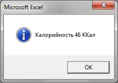
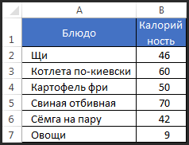
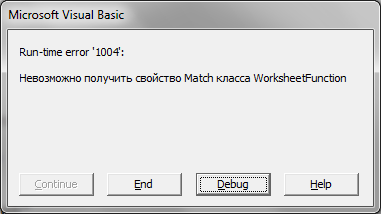
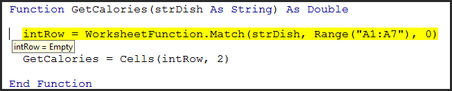

|
Поискав по рунету материал на тему обработки ошибок в VBA, не увидал на первых двух страницах результатов поиска чего-то, что мне понравилось. Может плохо смотрел, но решил написать на эту тему свою статью.
Простите, но - немного словоблудия :)
Ошибки в программе
Ошибки времени исполнения программы возникают, когда среда программирования не может выполнить то, что вы хотите. Таких ситуаций может быть много. Например:
- Вы обращаетесь к объекту по имени, а объекта с таким именем в коллекции нет
- Вы хотите выделить ячеку на одном листе, а этот лист в данный момент не является активным (типичнейшая ошибка новичков в Excel VBA)
- Вы хотите удалить отфильтрованные автофильтром строки, а фильтр вообще не вернул записей и удалять нечего
- Вы ссылаетесь на элемент массива, который находится за пределами его границ.
- Вы пытаетесь присвоить переменной значение, которое оно не может хранить. Например, переменной типа Long нельзя присвоить строковую константу или переменной типа Integer присвоить знанчение превышающее число 32767.
На любую из этих и сотни других ситуаций среда выполнения реагирует стандартно - прерывает ход выполнения программы на том операторе, где возникла ошибка или, как ещё принято говорить, исключение. На экран выводится информация о возникшей ошибке и предлагаются стандартные варианты для продолжения работы:
- Continue (продолжить) - этот пункт во время возникновения ошибки всегда не активен. Он активен, когда по ходу выполнения программы вы использовали оператор Stop. Кстати это очень полезный оператор для отладки программы.
- End (завершить) - завершение исполнения программы
- Debug (отладка) - переход в режим отладки, в котором можно посмотреть, на каком операторе возникла ошибка, что содержат переменные, можно даже перетащить жёлтую полоску, подсвечивающую текущий оператор, назад, и модифицировать знанчение переменных через окно Immediate window (впрочем это экзотика). В общем случае кнопка Debug позволяет посмотреть, где случилась ошибка и попытаться понять почему так случилось.
Если вы - автор программы, в которой случилась ошибка, то вы, должно быть, в начале будете рады увидеть подобное окно, ибо только так вы сможете отловить основные ошибки, скрытые в вашем коде. Однако, если эту ошибку видит пользователь, то для него это, мягко говоря, безрадостное и малопонятное зрелище. Ещё хуже, если за эту программу вам заплатили деньги. Поэтому в среде худо-бедно профессиональных программистов принято предусматривать обработку ошибок в своих программах.
Почему вообще в коде возникают ошибки?
- Много ошибок во время написания кода возникает по невнимательности или не совсем адекватного понимания того, что делаешь. Таких ошибок, как правило, очень много, особенно у начинающих программистов, но эти ошибки довольно легко отловить и исправить, так как, пока вы их не исправите, ничего не работает. Ну, например, вы должны извлечь данные из 5-го столбца, а вы извлекаете из 6-го, а их там банально нет. Ясно, что вы это очень быстро заметите.
- Вторая группа ошибок - это ошибки оптимиста. Когда программа написана в целом правильно, но алгоритм не готов к ударам судьбы в виде неожиданных действий со стороны пользователя, ошибок ввода-вывода (вы рассчитывали считать данные из файла, а файла с таким именем не оказалось, либо он заблокирован другим приложением), особенностей конфигурации компьютера (разные версии ОС или офиса, которые в некоторых мелочах отличаются).
- Тонкие логические ошибки. Чем сложнее программа, тем больше шансов, что модель задачи в вашей голове, ваша программа и реальность не совсем согласованы между собой. Пока вы не достигните достаточного погружения в задачу вы такие ошибки не найдёте и не исправите. Порой на это уходит много времени. Но это характерно для сложных задач.
- Ошибки на стыке вашего приложения и сервисов ОС, приводящие к неожиданным крахам приложения. Такого вообще возникать не должно, но как мы понимаем, и ОС и офис содержат ошибки, да и вы (что более вероятно) можете пользоваться системными вызовами не правильно. Подобные ошибки - сущий кошмар, особенно когда они проявляются лишь на некоторых конфигурациях, при определенных условиях, их трудно поймать и надёжно воспроизвести.
Задачи механизмов обработки ошибок
- Обеспечить стабильную работу программы. Возникновение ошибки, появление которой вы не предусмотрели, приведёт в большинстве случаев к аварийному завершению всей программы или её части. При определенном уровне подобных ситуаций это ведёт к тому, что программой пользоваться становится невозможно.
- Информирование. Мало обработать ошибку и предотвратить завершение программы. Надо ещё и адекватно проинформировать пользователя о причинах нестандартного поведения программы. Частно причиной ошибок в программе являются некорректные действия пользователя, поэтому важно сообщать ему о них.
- Защита данных от повреждения. Программа обязана защищать от непреднамеренных повреждений результаты своей или пользовательской работы. Деструктивные действия должны быть снабжены соответствующими предупредительными диалоговыми окнами. Часто ошибка, не обработанная должным образом может повредить нужные данные.
Файл примера
Скачать
Код без обработки ошибок
Вот простой пример с потолка. Если вызвать Example_00, то она прекрасно отработает без ошибок и вернёт это:

В функцию GetCalories передаётся строка с блюдом, а она должна вернуть его калорийность, сверившись с таблицей в A1:B7.

?
|
1
2
3
4
5
6
7
8
9
10 |
'---------------------------------------------------------------------------------------
Function GetCalories(strDish As String) As Double
intRow = WorksheetFunction.Match(strDish, Range("A1:A7"), 0)
GetCalories = Cells(intRow, 2)
End Function
'---------------------------------------------------------------------------------------
Sub Example_00()
MsgBox "Калорийность " & GetCalories("Щи") & " ККал", vbInformation
End Sub
'--------------------------------------------------------------------------------------- |
Давайте поищем слабые места в этом коде. Первое, что должно прийти в голову - если мы ищем, то, что произойдёт, если мы не найдём? А произойдёт, конечно же, ошибка. Её инициирует метод Match.

Ещё одно слабое место этой подпрограммы: функция возвращает вещественный тип Double, и даже, если поиск оказался удачным, то в Cells(intRow, 2) может случайно находиться текстовая строка, а потому, когда вы числовому типу попытаетесь присвоить строковый тип, также произойдёт ошибка. И, если вы второй ошибки сможете избежать за счёт дополнительного оператора if с проверкой через IsNumber(), то избежать первой ошибки таким способом нельзя. Что же делать? А вот тут на сцену выходят операторы обработки ошибок.
Есть 2 подхода к обработке ошибок: автономный подход и выносной. Эти термины я придумал только что, чтобы проще было их обсуждать.
Автономный подход
Смысл автономного подхода в том, чтобы не выносить сор из избы. Если в подпрограмме возникла ошибка, то мы должны предположить, на каком месте она возникнет и поджидать её там с дубиной. С ошибкой, в этом случае, разбираются обычно в операторе, идущем сразу после потенциально опасного места. Давайте смотреть, как это может выглядеть:
?
|
|
'---------------------------------------------------------------------------------------
Function GetCalories_v1(strDish As String) As Double
On Error Resume Next
Dim intRow As Long, varTemp As Variant
intRow = WorksheetFunction.Match(strDish, Range("A1:A7"), 0)
If intRow > 0 Then
varTemp = Cells(intRow, 2)
If IsNumeric(varTemp) Then GetCalories_v1 = varTemp
End If
End Function
'---------------------------------------------------------------------------------------
Sub Example_01()
Dim dblCalories As Double
dblCalories = GetCalories_v1("Борщ")
If dblCalories <> 0 Then
MsgBox "Калорийность " & dblCalories & " ККал", vbInformation
Else
MsgBox "Борщ кончился"
End If
End Sub
'--------------------------------------------------------------------------------------- |
Итак, что тут сделано:
- Сразу после объявления функции GetCalories_v1 идёт оператор on error resume next, который в случае возникновения в каком-либо месте ошибки, предписывает VBA просто передавать управление на следующий оператор, идущий после ошибочного.
- Мы объявили переменные. Необъявленные переменные получают тип Variant и значение по умолчанию Empty. Объявленные переменные числовых типов инициируются нулём, строковые - пустой строкой, то есть я наперёд знаю, что они содержат, а это хорошо для обработки ошибок.
- На вызове метода WorksheetFunction.Match у нас возникает ошибка, так как искомого значения в таблице нет. А это, между прочим, был оператор присваивания ( = ). Прежде, чем левой части оператора присваивания (intRow) что-то будет присвоено, необходимо вычислить правую часть оператора присваивания (WorksheetFunction.Match...), а поскольку в процессе этого вычисления возникает ошибка, то переменная intRow остаётся такой, какой была! А, как я уже сказал, VBA автоматически её инициализирует нулём до начала исполнения подпрограммы. Получается, что, если в этом операторе возникнет ошибка, то в intRow будет ноль. Если ошибки во время поиска не возникнет, то ноля там не будет ни при каких раскладах, так как строки на листе нумеруются с единицы.
- И вот этот ноль мы и контролируем, добавляя оператор If. Если intRow больше нуля, то WorksheetFunction.Match отработала штатно, а если нет - то работу подпрограммы надо прерывать, но об этом чуть позже.
- Далее мы помним, что Cells(intRow, 2) может теоретически вернуть строковое значение, которое вызовет ошибку Type missmatch при присвоении переменной типа Double (GetCalories_v1), поэтому мы вставляем дополнительную проверку промежуточной переменной varTemp тому, что она числовая. И если это так, то присваиваем GetCalories_v1 значение из varTemp.
- В случае возникновения любой ошибки внутри GetCalories_v1 она просто вернёт ноль. Почему ноль? Потому что переменная GetCalories_v1 тоже инициализируется нулём и об этом не надо заботиться, а в случае ошибки она останется в неприкосновенности.
- Соответственно родительский код (в нашем случае его роль играет процедура Example_01) должен проверить, а не вернёт ли GetCalories_v1 ноль, и быть готовым к этой ситуации.
- А вот теперь тонкий момент, который не все понимают. Почему я использовал промежуточные переменные intRow и varTemp? Вроде бы есть очевидный ответ - чтобы не вычислять значение выражений с Match и Cells 2 раза. Отчасти это, конечно, так. Но это, в данном случае, не главная причина. Главная причина в том, что такой код
?
|
1
2
3
4 |
If WorksheetFunction.Match(strDish, Range("A1:A7"), 0) > 0 Then
varTemp = Cells(WorksheetFunction.Match(strDish, Range("A1:A7"), 0), 2)
' ....
End If |
вызовет неправильное поведение программы. Если у нас Match вызовет исключение, то VBA передаст управление на СЛЕДУЮЩИЙ оператор, а следующий оператор в данном случае это то, что идёт после Then - присваивание переменной varTemp значения. Таким образом наша проверка на наличие ошибки сработает с точностью до наоборот, передав управление в ту часть кода, которая должна быть защищена от ситуации, когда Match не нашла строку в таблице. Вот почему важно в операторе If не иметь ничего такого, что могло бы вызвать ошибку.
- Как видите, в этом подходе мне зачастую даже нет необходимости проверять объект Err, чтобы понять, что произошла ошибка, так как я ориентируюсь на то, что промежуточные переменные остаются неинициализированными, что является показателем наличия ошибки.
Выносной подход
Данный метод основан на том, что, когда возникает ошибка, то VBA передаёт управление на специальный участок кода - обработчик ошибок, который обычно размещают в конце подпрограммы. Это может выглядеть так:
?
|
1
2
3
4
5
6
7
8
9
10
11
12
13
14
15
16
17
18
19
20
21
22
23
24
25
26
27
28
29
30
31
32
33
34
35
36
37
38
39
40
41
42 |
'---------------------------------------------------------------------------------------
Function GetCalories_v2(strDish As String) As Double
On Error GoTo ErrorHandler
Dim intRow As Long
intRow = WorksheetFunction.Match(strDish, Range("A1:A7"), 0)
GetCalories_v2 = Cells(intRow, 2)
Exit Function
ErrorHandler:
On Error Resume Next
Select Case Err
Case 1004: MsgBox "Наверное, борщ отсутствует в справочнике...", vbCritical
Case 13: MsgBox "Наверное, у борща проблемы с калорийностью...", vbCritical
End Select
End Function
'---------------------------------------------------------------------------------------
Sub Example_02()
Dim dblCalories As Double
dblCalories = GetCalories_v2("Борщ")
If dblCalories <> 0 Then
MsgBox "Калорийность " & dblCalories & " ККал", vbInformation
Else
MsgBox "Борщ кончился", vbCritical
End If
End Sub
'--------------------------------------------------------------------------------------- |
Обратите внимание, что:
- Оператор on error теперь в случае ошибки предписывает передавать управление на метку ErrorHandler, которая объявлена в конце кода процедуры GetCalories_v2
- В коде мы никак не заботимся о каких-либо проверках. Возникла ошибка? Иди на метку - там разберутся.
- Если ошибки не случилось, то, чтобы программа не стала исполнять строчки, предназначенные для обработки ошибок, перед меткой ErrorHandler обычно ставят оператор Exit Sub или Exit Function (в зависимости от типа подпрограммы).
- Принципиальный момент - наличие оператора On Error Resume Next сразу после метки ErrorHandler. Дело в том, что после того, как вы перешли на метку ErrorHandler, очень опасно иметь действующим оператор On Error GoTo ErrorHandler, так как, если у вас в обработчике ошибки случится любая ошибка, то управление будет передано опять на метку и, как нетрудно понять, образуется бесконечный цикл. Поэтому сразу после метки мы возможность возникновения цикла ликвидируем оператором On Error Resume Next.
Что лучше?
Какой метод лучше применять зависит от ваших предпочтений и конкретных ситуаций. Грамотную обработку ошибок можно сделать и так и эдак. Вот несколько соображений по преимуществам и недостакам данных подходов:
Автономный подход
|
Преимущества |
Недостатки |
|
Есть возможность точно идентифицировать каждую конкретную проблему (если вы её предусмотрели), возникающую во время исполнения, что позволит вам дать самые точные инстркции пользователю для предотвращения появления исключения в будущем. |
Достаточно трудоёмок, так как подразумевает наличие большого количества проверок в коде. Каждое потенциально опасное действие должно быть снабжено соответствующим оператором If, в котором контролируется значение переменной или код ошибки. |
|
Надо хорошо представлять себе ситуации, где могут возникнуть ошибки, в противном случае ряд ошибок вы просто не заметите на этапе отладки. |
|
Необходимо больше кода, а также требуется опыт и фантазия. |
|
Необходимо больше промежуточных переменных |
Выносной подход
|
Преимущества |
Недостатки |
|
Ни одна ошибка не проскочит незамеченной. |
Не смотря на то, что вы перехватите все ошибки, отреагировать на них правильно затруднительно, так как вы, по большому счёту, не знаете, на каком операторе произошла ошибка и почему. |
|
Удобнее организовывать централизованный сбор логов по ошибкам в приложении. Однозначно, фаворит для больших проектов. |
|
Средства VBA для обработки ошибок
Кратко пробежимся по операторам, функциям и объектам VBA, которые предназначены для обработки ошибок времени исполнения программы.
Операторы
On Error { GoTo label | Resume Next | GoTo 0 }
Оператор on error управляет тем, на какой участок вашего кода будет передано управление в случае возникновения ошибки. Данный оператор можно вставить в любое место вашей программы или подпрограммы. Есть 3 варианта:
- On error goto label - после того, как этот оператор выполнен, ошибка, возникшая на других операторах программы приведёт к переходу на метку label.
- On error resume next - после такого оператора, VBA будет игнорировать возникшую ошибку и передавать управление на следующий оператор, стоящий за тем, в котором возникла ошибка.
- On error goto 0 - это режим по-умолчанию. В случае возникновения ошибки данный режим приведёт к появлению на экране стандартного обработчик ошибок VBA с кнопками End и Debug.
Resume { label | Next | [0] }
Данный оператор возобновляет выполнение программы. Применяется в выносном методе обработки ошибок.
- resume label- возобновление с метки label
- resume next - возобновление со следующего оператора
- resume или resume 0 - возобновление с оператора, вызвавшего ошибку. Это имеет смысл, если вы устранили ошибку в своём обработчике. На мой взгляд, на практике такое применяется крайне редко.
Goto label
Переход на метку. Может пригодиться, однако, использование меток в коде для чего-то большего, чем обработка ошибок, считается страшным моветоном.
Exit { Do | For | Function | Sub }
Досрочный выход из циклов (Do или For) и досрочный выход из подпрограмм (функции или процедуры). Могут пригодиться при обработке ошибок, но вообще это операторы и без того чрезвычайно полезны.
Объект Err
- Err - глобальный объект (его не надо объявлять, а можно сразу пользоваться), который содержит информацию о последней ошибке, случившейся в вашей программе. Проверяя Err сразу после возникновения исключения или после ситуации, которая могла привести к исключению, вы можете понять, что имело место на самом деле.
- Свойство Err.Number - содержит числовой код ошибки, по которому их различают в программе. Поскольку Number - свойство по умолчанию, то вы можете его опускать, то есть Err и Err.Number - это эквиваленты. Значение ноль говорит о том, что ошибки не произошло.
- Err.Description - содержит англоязычное краткое описание ошибки
- Err.Source - возвращает имя модуля, в котором возникла ошибка
- Err.Clear - сбрасывает последнюю ошибку. Err сбрасывается также при выполнении оператором Resume, Exit (любого типа кроме Do и For) и On Error.
- Err.Raise - искусственно вызывает исключение указанного в переданном параметре типа. Можно использовать для тестирования вашей подсистемы обработки ошибок.
P.S.
Лично я привык в своих программах использовать автономный подход и, возможно, поэтому я не совсем осознаю все преимущества выносного подхода. Буду рад прочесть в комментариях ваше мнение на этот счёт. Тема обработки ошибок данной статьёй, конечно, быть исчерпана не может, но она послужит вам хорошей стартовой точкой в этом важном деле.
Читайте также:
|